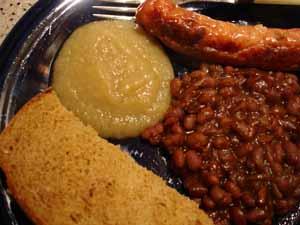

Mom makes baked beans
My husband says being married to me is like living with a human history museum. He got more evidence of that from tonight’s dinner, in which I indulged myself with another childhood favorite, Boston baked beans. Even though baked beans are traditional picnic fare and at least used to be served along side the hamburgers and fried chicken on the 4th of July, I like to make them in the winter, since they have to bake for 6-7 hours and in the summer make the house even hotter than it already is.

I made these in my trusty Le Creuset knock-off, which has to be the best $30 I ever spent; I use my oval Dutch oven at least twice a week and it’s holding up beautifully. It was actually a little big for the recipe and I toyed with the idea making twice the amount, but since no one in the family really likes baked beans but me I quickly realized that would be insane. Bill ate one serving tonight to my two, but I know I will be throwing leftovers away. I hate that. I served the beans with sausages, home made applesauce, and brown bread for a real Yankee supper.
The recipe I use is adapted from the 1968 edition of the Better Homes and Gardens Cookbook, and tastes very close to what my mother used to make.
Baked Beans
- 1 pound (2 cups) dry navy beans
- 1/3 cup brown sugar
- 1 teaspoon dry mustard
- 1/2 cup molasses
- 1/4 pound salt pork (I have always used bacon), diced
- 1 medium onion, sliced
Rinse beans; add to 2 quarts cold water. Bring to boil; simmer 2 minutes; remove from heat; cover; let stand 1 hour. (Or, add beans to water and let soak overnight.)
Add 1/2 teaspoon salt to beans and soaking water; cover and simmer for about 1 hour or until tender. Pour contents of saucepan into casserole or beanpot, mixing in remaining ingredients.
Cover and bake at 300º for 5-7 hours, stirring occasionally and adding water as needed. Don’t let them get too dry. I have never found that they are done in 5 hours; they always needs the longer amount of time to achieve the proper consistency and texture – syrupy and caramelized with the beans breaking down a little and getting a bit mushy.
Comments
Rebecca,
What brand is your Le Creuset knock-off? I’m looking for a decent Dutch oven under $50.
Hi, Yulinka—I bought it years ago at a TJ Maxx or Marshall’s, and it just says “Made in France” on the bottom; no brand.
However, I’ve been looking at these things until I’m cross-eyed the past couple of days because of Christmas shopping, and I saw that Rachel Ray has put out a version that’s really reasonably priced, available at Bed, Bath, and Beyond. At Target today I saw a nice 5 quart enamel on steel Dutch oven for about $30, called something like “Cook’s Choice”, in red.
Amazon has some Le Creuset pieces on sale but they’re still pretty expensive.
Oh, do you mind if I’m pedantic for just a second? That’s not brown bread. Boston brown bread is a molasses-sweetened, not yeasted, with raisins, steamed in a coffee can. Forgive me, I just love brown bread. I’ve got cans in my cupboard, just in case there’s some sort of emergency and I need to eat out of my pantry for a week – I’ll be living on brown bread and tuna, apparently.
That looks like a nice dinner, though – and the beans looks great. You wouldn’t have leftovers if my boyfriend were around!
Hi, Seasonal! Welcome to the blog! You’re absolutely right, that’s not really “brown bread”, just wheat bread, although I did sweeten it with molasses. I love Boston brown bread, too, but I don’t think I’ve made it since I was a college girl and was experimenting with different breads.
BTW, I just threw away the rest of the beans after eating the leftovers all by myself for the last several days.
Why not freeze the leftovers instead of throwing them out? I’ve had a lot of luck with freezing leftover beans for use at a later date. It’s a shame to waste good food…
Hi, Alice – Freezing baked beans! I never would have thought of that; it sounds like you’re saying they freeze well. It does go against my grain to waste good food but I had no idea you could freeze that kind of thing. I like it though, then I could pull out small amounts when I had a craving for them.
Alice, how do you recommend freezing homemade baked beans???
Add a comment